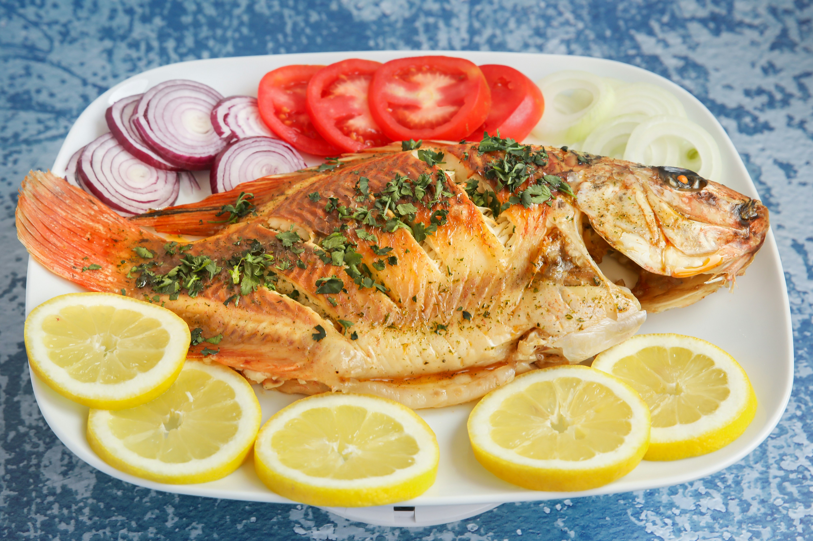

Fried Fish

Description
A simple fried‑fish recipe comes together with just five basics—fish fillets, salt, black pepper, flour, and oil—by seasoning the fish well,
coating it lightly in flour, heating the oil until it’s hot,
frying the fillets until golden and crisp, and letting them drain briefly so they stay crunchy and light.
Ingredients
- Fish fillets
- Salt
- Black pepper
- Flour
- Oil for frying
Steps
- Season the fish fillets with salt and black pepper.
- Lightly coat each piece in flour, shaking off the excess.
- Heat oil in a pan until it’s hot enough for frying.
- Fry the fish on medium heat until golden and cooked through.
- Let the fillets drain briefly so they stay crisp.